- 发帖数量：15 帖（星主 Jason不跪；另有 1 帖时间正好等于上次截止点 2026-10-18 05:14:21.131 +0800，按"晚于"规则未收录）
- 时间范围（美西时间，PDT）：2026-10-18 01:42 – 2026-10-18 17:33（对应北京时间 10-18 16:42 – 10-19 08:33）
- 图片：共 28 张已存档（帖 2–15）；帖 1 是长文，配图 11 张未能取回，见帖 1 说明
今日要点速览
今天的主线是"调整的账单该由谁买单"：法国街头骚乱、中国社保和财政、新西兰房价与汇率、全球 366 万亿美元债务，说的其实是同一件事——当增长不够、钱不够花的时候，政府、企业、居民、投资者各自要吞下多少。 宏观数据层面，值得带走的是三个数字：全球债务 $366 万亿（IIF）、中国非金融部门债务/GDP 约 305%（UBS）、标普 500 的估值预示未来十年年化回报只有 4–5%（Apollo）。地缘层面，泽连斯基对美国的指责（炼油厂、星链、爱国者导弹）和中国对俄出口创新高，是同一场战争的两面。中国方面，伍戈与"西京"的文章、华泰与德辉的市场调查，共同描绘出"政策发力偏晚、市场情绪偏防御"的画面。最后，一帖《雍正王朝》截图（"查到仙，草草收场"）和一帖"8 年前的马前炮"，是今天偏评论、偏情绪的两条。
说明：以下解读基于 Jason 转发的原文和截图。截图里的事实性陈述（如泽连斯基的指控、法国骚乱规模）均为"来源方的说法"，本报告无法独立核实，已尽量标明出处。数字凡写"约"的，是我从图上读出来的近似值。
帖 1 8 年前的"马前炮"（长文）
Jason 在翻自己 2018 年写的东西，挑出一批"事后证明说对了的预判"（房价、医疗、金融、CRS），以"马前炮"自称。读全文收起
发布时间：2026-10-18 01:42（美西）｜北京时间 10-18 16:42 标签：无（长文）
帖子原文
8年前的"马前炮"
最近在整理过往的文字。 整到8年前（2018年）——
里面有不少"马前炮"，关于房价、关于医疗、关于金融、关于CRS。 ……
说明：这是一篇"长文"（talk.article），在星球里只显示开头摘要。我另外打开了文章的公开页面，页面正文文字只有上面这几行，后面的实质内容是 11 张图片（宽约 360–560、高约 75–610 像素，应为 2018 年旧文的截图）。读取图片需要从文章页向本机接收端发请求，该页面一发请求就卡死，所以这 11 张图本次没能取回，我也没看到具体内容。下面的解读只针对可见的文字，不替他编造 2018 年说了什么。
背景与关键数据
- 马前炮 vs 马后炮：马后炮是"事情发生后才说我早就知道"（事后诸葛亮）；马前炮是"事情发生前就说了，后来应验"。关键差别是有没有时间戳——2018 年的原文就是时间戳。
- CRS（Common Reporting Standard，共同申报准则）：OECD 推动的跨国金融账户涉税信息自动交换机制。各国税务机关每年把对方居民在本国金融机构的账户信息互相交换。中国大陆在 2018 年 9 月首次对外交换，所以"2018 年谈 CRS"属于很早期的话题。
- 房价、医疗、金融这三个主题在 2018 年的背景：房地产调控的"房住不炒"、药品集中带量采购（4+7 试点是 2018 年底启动）、去杠杆与 P2P 暴雷。这些是我补充的当年大背景，不代表原文内容。
为什么重要 / 对市场和经济的含义
这帖本身不含市场信息，更像"自我复盘"。它的意义在于提示一种读法：Jason 的星球除了每日转发，还有一个"长期预判—事后验证"的线索，后续如果他把这些旧文贴出来，可以拿来检验他框架的可靠度。
延伸知识
- 后见之明偏差（hindsight bias）：人们事后总觉得"早就知道"。防守办法就是只相信带日期的记录。
- 幸存者偏差：整理旧文时，"说对的"比"说错的"更容易被挑出来。读这类"我早就说过"的内容时，可以问三个问题：预判是否具体、能不能被证伪、说错的有没有也放出来。
帖 2 "查到仙，草草收场，办几个鬼消灾"
用电视剧《雍正王朝》里一个"案子查到太子和皇子就收手、只办几个小官"的片段，讽刺"查到大人物就停、只处理小人物"的收场方式。读全文收起
发布时间：2026-10-18 12:33（美西）｜北京时间 10-19 03:33 标签：#扯淡# ｜ 图片 9 张
帖子原文
查到仙，草草收场，办几个鬼消灾 #扯淡#

背景与关键数据
- "仙"与"鬼"：民间说法里，"神仙"指大人物、背后有靠山的人，"小鬼"指小角色。"查到仙，草草收场，办几个鬼消灾"= 调查一路查到最高层的人物，就匆匆结束，拿几个小人物顶罪了事。
- 九张截图其实是同一句字幕，来自《雍正王朝》第 8 集（图中角标 06:18–06:20 / 45:03）。连起来读是：
| 图 | 字幕（繁体原文，我转为简体） |
|---|---|
| 1 | 大清国朝廷发生了贪官徇私枉法 |
| 2 | 以钱买命的荒唐大案，朝野震惊 |
| 3 | 鉴于此案牵涉到太子、部分皇子 |
| 4 | 及刑部相关大臣等 |
| 5 | 错综复杂的关系网 |
| 6 | 做为最高统治者的康熙 |
| 7 | 也只能把刑部尚书司马尚…… |
| 8 | 刑部侍郎黄体仁 |
| 9 | 革职拿问，草草收场 |
字幕里的人名我按截图转写，个别字可能有误。
图片解读
九张图是同一场景的特写：有穿官服的老臣低头不语（图 1、4）、光头佛珠的人物皱眉（图 2、3）、背影（图 5、6），最后是一队戴红缨帽的差役（图 7–9）。它们不含数据，传达的是叙事：案子牵涉到储君、皇子和刑部，皇帝权衡后只处理两名刑部官员。
为什么重要 / 对市场和经济的含义
帖子没有指明他在讽刺哪件现实中的事，我也不猜。可以确认的是，他给这帖打了 #扯淡# 标签，态度是不认可这种"到此为止"的收场。
对经济和市场的一般含义：问责的彻底程度，是制度可信度的一部分。如果大家相信"出了问题只会处理小人物"，那么规则对大人物没有约束力，企业和投资者就会给这个制度要求更高的风险溢价（更低的估值、更短的投资期限）。
延伸知识
- 选择性执法（selective enforcement）：规则存在，但执行对象不均。在经济学里属于"制度质量"问题，世界银行的治理指标（WGI）里有"法治"和"控制腐败"两项就是量化这件事。
- "大到不能坐牢（too big to jail）"：2008 年金融危机后，美国大型银行罚款了很多，但高管被刑事追究的极少，被广泛批评为同类现象。这说明这不是某一国独有的问题。
帖 3 泽连斯基：特朗普这么明摆着偏向俄罗斯，没人管管吗？
标题是 Jason 的反讽式概括；三张截图（中文翻译的 Bloomberg 报道）的实质是：泽连斯基说美国政府在炼油厂打击、星链限速、爱国者导弹交付三件事上向乌克兰施压，他认为目的是逼乌克兰向俄罗斯让步。读全文收起
发布时间：2026-10-18 12:48（美西）｜北京时间 10-19 03:48 标签：#其他国家经济# ｜ 图片 3 张
帖子原文
泽连斯基： 特朗普这么明摆着偏向俄罗斯，没人管管吗？ #其他国家经济#
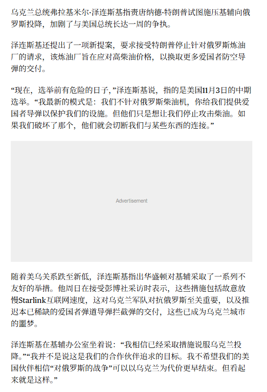
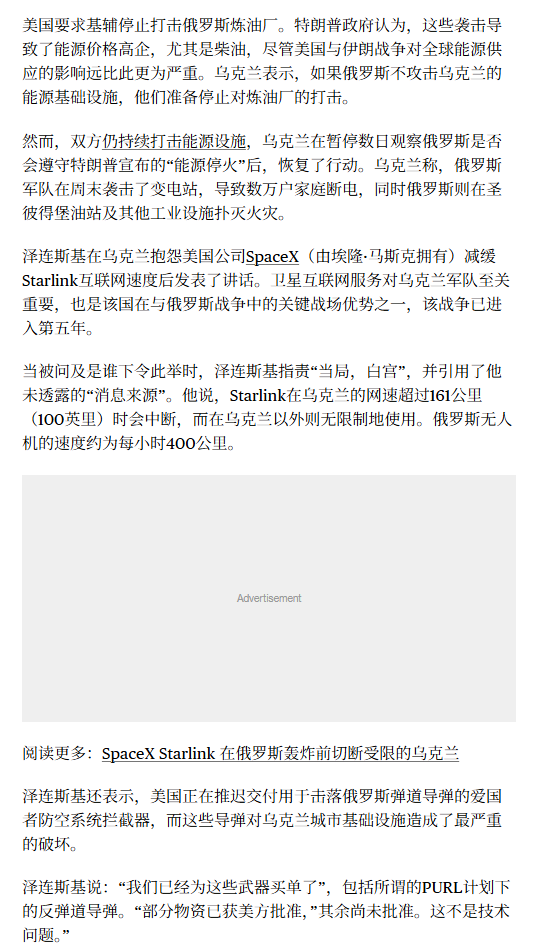
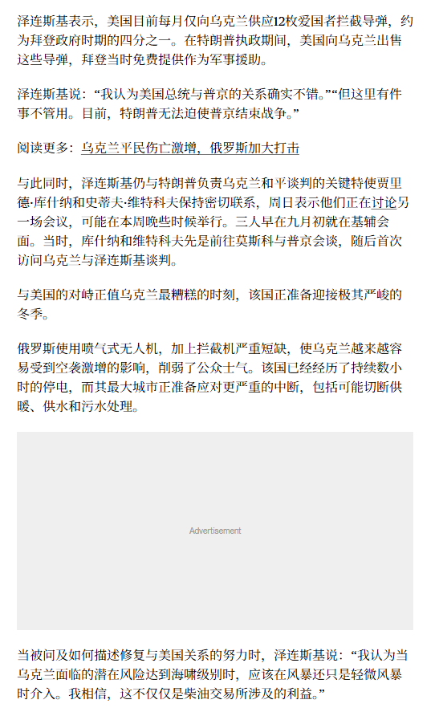
背景与关键数据
截图里的主要说法（均为泽连斯基或报道方的陈述，白宫的回应不在截图内）：
- 炼油厂交易：美方要求乌克兰停止袭击俄罗斯炼油厂，理由是袭击推高了能源价格，尤其是柴油。泽连斯基提出的方案是：乌方接受停止打炼油厂，换取更多"爱国者"防空导弹的交付；他说"选举前有危险的日子"，指 11 月 3 日的美国中期选举。
- 星链（Starlink）：他说美方采取了不友好的措施，包括故意放慢乌克兰境内的星链速度，而卫星互联网对乌军作战至关重要。问是谁下令时，他指向"白宫"。截图还提到：星链在乌克兰境内速度超过约 161 公里/小时（100 英里）就会中断，在乌克兰以外不受限；俄罗斯无人机时速约 400 公里（截图原文写的是"网速"，疑为翻译把"移动速度"译错，我按上下文理解为终端移动速度上限）。
- 导弹交付：美方每月仅供应 12 枚爱国者拦截弹，约为拜登时期的四分之一；乌方说"我们已经为这些武器买单了"（包括 PURL 计划下的反弹道导弹），部分获美方批准，其余尚未批准，"这不是技术问题"。
- 谈判与冬季：库什纳（Jared Kushner）和维特科夫（Steve Witkoff）是美方斡旋的关键人物，9 月初先去莫斯科见普京、随后首次访问乌克兰。乌克兰正面对严冬，俄方喷气式无人机加上拦截弹短缺，已出现持续数小时的停电，大城市可能面临供暖、供水、污水处理中断。
- 能源互打：美方认为打炼油厂导致能源价格偏高，尽管美伊战争对全球能源供应的影响"远比此严重"（报道原话）。乌克兰说，如果俄方不打乌克兰能源设施，他们准备停止打炼油厂。双方仍在互打能源设施。
图片解读
三张图都是文字截图（竖排长图），带灰色"Advertisement"占位块，说明是从网页整页截下来的翻译稿。没有图表，信息全在上面的文字里。
为什么重要 / 对市场和经济的含义
- 柴油价格和选举：柴油是货运、农业、工业的主要燃料，涨价会传导到几乎所有商品价格，直接推高通胀。临近中期选举，美国政府对油价特别敏感——这是截图里"炼油厂交易"的逻辑核心。
- 能源是战争的主战场之一：乌克兰打俄罗斯炼油厂，减少俄成品油出口；俄打乌克兰电网，制造冬季压力。这让能源价格和地缘政治直接挂钩。
- Jason 的标题带有讽刺味，他想表达的大概是：看看同盟之间的关系现在变成什么样了。这是他的观点，截图本身是乌克兰一方的说法。
延伸知识
- 裂解价差（crack spread）：炼油厂的利润近似于"成品油价格 − 原油价格"。炼油厂被打，成品油（柴油）供给收紧，价差扩大，所以打炼油厂比打油田更直接地推高柴油价格。
- 不对称依赖（asymmetric interdependence）：A 对 B 的依赖大于 B 对 A 时，B 就拥有"议价杠杆"。乌克兰对美国的武器、情报、星链的依赖，让美国的"暂缓交付""限速"这类动作成为谈判手段——这是泽连斯基抱怨的底层结构。
帖 4 Bloomberg：新西兰元的"利差故事"可能被一份 CPI 戳破
市场押注新西兰央行会加息 100 个基点以上，央行自己只暗示 40 个基点；这个落差靠"利差优势"撑着纽币，一旦本周 CPI 低于预期，落差会被抹平，纽币可能跌破 2020 年的低点。读全文收起
发布时间：2026-10-18 12:53（美西）｜北京时间 10-19 03:53 标签：#其他国家经济# ｜ 图片 1 张
帖子原文
bloomberg： 新西兰元已经连续五个季度下跌。目前，利率互换市场预计，未来一年新西兰央行累计加息幅度将超过100个基点（1个百分点），而新西兰央行自身预测的加息幅度仅为40个基点。纽币目前处于极其不利的境地。如果CPI数据低于预期，纽币可能失去一个关键支撑因素。如果本周CPI低于预期，市场可能重新定价：通胀低于预期 → 加息预期下降 → 纽币利率优势减弱 → 纽币承压。如果新西兰央行选择暂停加息，市场此前预期的利率优势就可能受到威胁，从而推动纽币跌破2020年的低点。 #其他国家经济#
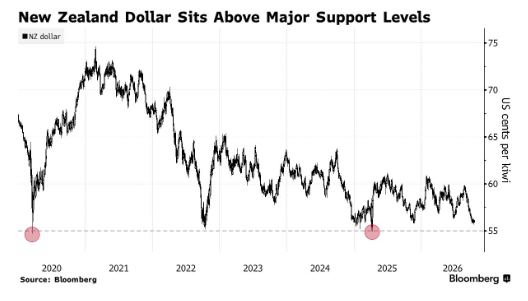
背景与关键数据
- 100bp vs 40bp：1 个基点（bp）= 0.01%，100bp 就是 1 个百分点。"利率互换市场预计"是指从互换（swap）价格反推出来的市场对未来政策利率的预期。市场的预期（>100bp）是央行自己预测（40bp）的 2.5 倍以上。
- 为什么利率预期会影响汇率：一个货币的利率相对别国更高，持有它就能拿到更多利息，吸引资金流入，货币趋强。纽币现在的支撑之一，就是"未来利率会更高"这个预期。
- 逻辑链（帖子原文的推演）：CPI 低于预期 → 加息预期下降 → 利差优势缩小 → 纽币承压。
图片解读
Bloomberg 图表，标题 "New Zealand Dollar Sits Above Major Support Levels"（纽币位于重要支撑位之上）。
- 纵轴：美分/纽币（US cents per kiwi），范围约 55–75；横轴：2020–2026。
- 曲线走势：2020 年初跌到约 55，之后一路反弹到 2021 年初接近 75，再震荡下行；2024 年底再次回到约 55，2026 年约在 56 附近。
- 两个红圈和一条虚线：虚线在约 55 美分，两个红圈是 2020 年和 2024 年底两次触及该水平的低点。这就是"重要支撑位"：价格两次跌到这里都反弹了，市场把它当作底部。
- 信号：当前汇价（约 56）离支撑位只有 1 美分左右，一旦跌破，技术派可能触发更多卖盘。
为什么重要 / 对市场和经济的含义
- 汇率这类"预期驱动"的价格，最危险的不是坏消息，而是预期被修正。纽币如果已经计入了"加息 100bp"，那么只要数据偏弱、央行表态偏鸽，价格就可能下跌。
- 帖子隐含的背景：新西兰处于加息周期（帖 10 的第二张图里，新西兰 10 年期国债收益率也在 2026 年升到约 4.9%）。
- 提示：本周的新西兰 CPI 是这个故事的关键数据点。
延伸知识
- 市场定价 vs 央行指引：央行通常会发布自己的利率路径预测（新西兰央行叫 OCR 路径）。如果市场定价远高于央行路径，说明市场在"赌央行会比自己说的更强硬"。历史上这种落差通常以市场向央行靠拢收场，但如果通胀真的失控，也可能反过来。
- 利差交易（carry trade）：借低息货币、买高息货币，赚利差。这种交易的特点是"平时慢慢赚、出事时快速亏"，所以一旦利差预期收窄，容易引发集中平仓，让汇率比基本面预期跌得更快。
帖 5 zerohedge：法国正在燃烧
法国的全国性抗议由高中生、重新动员的黄背心、普通社会群体三股力量汇合，根源是"增长不够、财政紧张、各方都在问：调整成本该谁出"。读全文收起
发布时间：2026-10-18 12:59（美西）｜北京时间 10-19 03:59 标签：#其他国家经济# ｜ 图片 2 张
帖子原文
zerohedge： 法国正在燃烧，骚乱蔓延至法国以外的其他欧盟国家；根据路透报道，这次全国性抗议主要由三股力量汇合而成。这次运动最早从巴黎郊区的高中生抗议开始，学生主要不满教师短缺、班级拥挤、学校设施老化，以及升学竞争带来的压力。2018年的黄背心运动原本因燃油税和生活成本问题兴起。这一次，部分黄背心参与者重新动员，他们要求改善购买力、提高工资、降低生活成本，并维护公共服务。社会群体也参加，抱怨自己承担的生活成本不断增加，却没有得到相应质量的教育、公共服务和社会保障。这种不满已经超出了单一政策争议，演变为对政府能否回应社会诉求的质疑。马克龙头疼，这次法国抗议的深层问题，可以概括为：当经济增长不足以持续改善多数人的生活，而财政又难以满足不断增长的公共服务需求时，社会各群体就会开始反抗：谁应该承担调整成本？ #其他国家经济#
背景与关键数据
- 三股力量（来自帖子转述的路透报道）：①巴黎郊区高中生（教师短缺、班级拥挤、设施老化、升学压力）；②黄背心运动老参与者（购买力、工资、生活成本、公共服务）；③更广泛的社会群体（付出越来越多，却没得到相应质量的教育、公共服务和社会保障）。
- 黄背心运动：2018 年起因燃油税上调爆发的抗议，因抗议者穿反光黄背心得名，核心诉求是外围地区居民的生活成本。
- 最后一句是全帖的论点：增长不足 + 财政吃紧 → 社会各群体争"谁承担调整成本"。
- 我补充的背景（不在截图里）：法国近年公共债务占 GDP 约 110% 上下、财政赤字偏高，2025 年起政局动荡、主权评级被下调，这些都是"财政难以满足公共服务需求"的现实背景。
图片解读
- 图 1：文字加推文截图。上半是翻译文字："来自完全不同世界的移民……已经摧毁了那个曾经伟大的国家。关闭你们的边界，掌控局面，趁还来得及！"特朗普继续说道，下面是特朗普在 Truth Social 的帖子原文 "France is burning!…"（时间显示 Oct 18, 2026, 8:11 AM）。下半是副总统范斯在 X 上的回应："西方自由派以多样性和同情之名将第三世界引进法国及其他国家……"，并引用了 Visegrád 24 的快讯，称利摩日（Limoges）建于 1873 年的市政厅在骚乱中受损、尖顶坍塌。
- 图 2：文章要点列表和"法国沦陷了吗？"章节。要点包括：马克龙陷入危机、无法控制社会动荡；骚乱蔓延至法国以外的其他欧盟国家（红框标注，帖子开头的"蔓延"就是引这一条）；极左翼暴力在法国各城市升级；随着马克龙政治危机加剧，黄背心重新出现。下方嵌入 Europa.com 的视频截图："Footage from central Paris today amid intense rioting across France"，画面是一座雕像广场（疑似巴黎共和国广场）上空浓烟滚滚、人群聚集，人群中可见黄背心。
为什么重要 / 对市场和经济的含义
- 来源的倾向性要注意：ZeroHedge 是风格偏激、擅长制造紧迫感的财经博客，标题"法国正在燃烧"带有渲染成分；截图里的特朗普、范斯言论也是明确的政治立场表态。骚乱真实规模、是否真"蔓延到其他欧盟国家"，仅凭截图无法判断。
- 但帖子最有价值的，是倒数第二句的分析框架——它不是移民话题，而是财政与分配问题。法国如果财政整顿推不动，对法国国债收益率、欧元、欧洲银行股会有影响。
- 与今天其他帖的联系：帖 6、7 的中国社保与财政、帖 14 的全球债务，说的是同一类问题。
延伸知识
- OAT–Bund 利差：法国 10 年期国债（OAT）收益率减去德国 10 年期国债（Bund）收益率，是市场给"法国政治和财政风险"定的价格。利差扩大，说明投资者要求更高补偿。
- 分配冲突（distributional conflict）：当"蛋糕"不再快速变大时，每一项削减都变成"零和博弈"——这个概念在政治经济学里常用来解释为什么经济放缓期容易爆发社会冲突。
帖 6 西京：社保"负拉弗效应"
在企业现金流和居民收入预期都偏弱的时候，强力征缴社保如果超过临界点，名义上收得更严，实际入库的钱反而会变少。读全文收起
发布时间：2026-10-18 13:44（美西）｜北京时间 10-19 04:44 标签：#TAX# ｜ 图片 2 张
帖子原文
西京： 一旦越过临界点，名义征缴强度继续提高，实际社保收入反而下降，形成"负拉弗效应"。 #TAX#
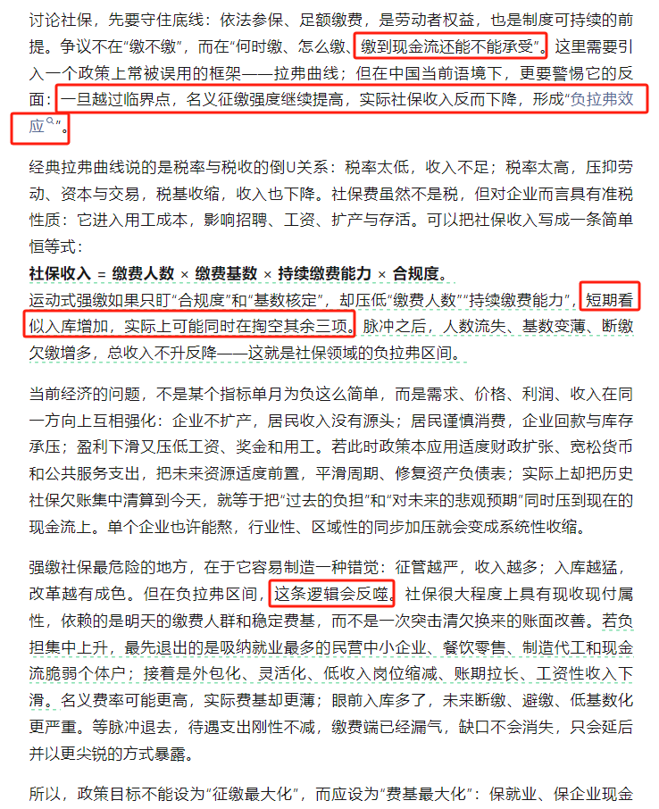
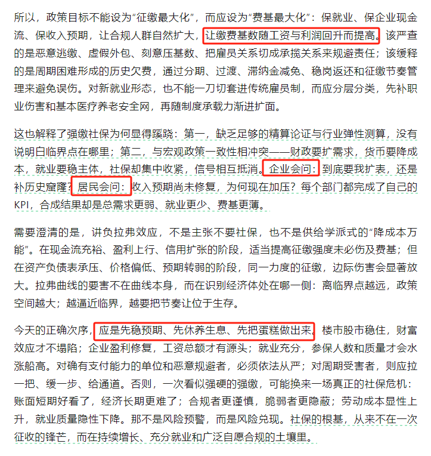
背景与关键数据
两张图是同一篇文章的前后两页（红框是读者或作者的重点标注）。核心论点，我按原文逻辑整理：
- 争议点不在"缴不缴"，而在"何时缴、怎么缴、缴到现金流还能不能承受"。依法参保、足额缴费是底线，没有争议。
- 一条恒等式：社保收入 = 缴费人数 × 缴费基数 × 持续缴费能力 × 合规度。
- 运动式强缴的问题：如果只盯"合规度"和"基数核定"，却压低了"缴费人数"和"持续缴费能力"，短期看似入库增加，实际上可能同时在掏空其余三项。脉冲之后，人数流失、基数变薄、断缴欠缴增多，总收入不升反降。
- 为什么现在尤其要警惕：当前经济问题是需求、价格、利润、收入同方向互相强化；如果此时政策把历史社保欠账集中清算到今天，就是把"过去的负担"和"对未来的悲观预期"同时压到现在的现金流上。
- 最先退出的是谁：吸纳就业最多的民营中小企业、餐饮零售、制造代工和现金流脆弱的个体户；接着是外包化、灵活化、低收入岗位缩减、账期拉长。
- 建议的目标：不应是"征缴最大化"，而应是"费基最大化"——保就业、保企业现金流、保收入预期，让缴费基数随工资和利润回升而自然提高。该严查的是恶意逃缴、虚假外包、刻意压基数；该缓释的是周期困难形成的历史欠费。
- 正确次序："先稳预期、先休养生息、先把蛋糕做出来"。
图片解读
两张图都是文字页，红框标出的句子依次是："缴到现金流还能不能承受""一旦越过临界点……形成'负拉弗效应'""短期看似入库增加，实际上可能同时在掏空其余三项""这条逻辑会反噬""让缴费基数随工资与利润回升而提高""企业会问／居民会问""应是先稳预期、先休养生息、先把蛋糕做出来"。红框反映的是转发者认为的重点；Jason 的帖子正文只摘了其中"一旦越过临界点……形成'负拉弗效应'"这一句。
为什么重要 / 对市场和经济的含义
- 这是对一项具体政策取向（加强社保征缴）的批评，立场是"现在不是收紧的时候"。作者的潜台词是政策信号互相抵消：财政要扩需求、货币要降成本、就业要稳主体，社保却在集中收紧。
- 对市场的含义：企业用工成本上升会压缩利润，对中小企业和劳动密集型行业影响更大，也可能抑制招聘和工资增长，间接影响消费。
- 这是一篇观点文章，不是数据，"临界点在哪里"文章自己也承认缺少精算论证。
延伸知识
- 拉弗曲线（Laffer curve）：传说 1974 年经济学家阿瑟·拉弗在餐巾纸上画出：税率为 0 时没有税收，税率为 100% 时也没有税收（大家不干活了），中间某个点税收最大。曲线右半边"税率越高、税收越少"的区域就是文中说的"负拉弗区间"。难点是：临界点没人能精确知道。
- 税楔（tax wedge）与准税收：社保缴费虽然名义上不是税，但对企业来说和税一样会拉高用工成本，让"雇主付出的"和"员工到手的"之间出现一个楔子。楔子越大，企业越倾向少雇人、压低工资基数或转用外包。
- 现收现付（pay-as-you-go）：现在这一代人缴的费，直接发给现在的退休人员。这种制度依赖"未来的缴费人群"，所以文中强调"依赖的是明天的缴费人群和稳定费基"。（帖 13 香港的老龄化数据，正是这类制度的压力来源。）
帖 7 伍戈：财政存款创历史新高，财政发力在年初
经济在放缓，政府账户上的存款却创历史新高，说明钱没花出去；原因之一是项目收益率下降得比专项债融资成本更快，地方不愿意投；财政的效果可能要到明年初才更明显。读全文收起
发布时间：2026-10-18 13:48（美西）｜北京时间 10-19 04:48 标签：#TAX# ｜ 图片 1 张
帖子原文
伍戈： 与过往不同的是，经济虽有趋缓压力但财政存款却升至历史高位。除了GDP目标实现难度、地方换届等因素之外，更突出的矛盾似集中在项目收益率与专项债等利率下行速度不匹配，从而在成本-收益层面影响地方投资意愿。财政效力或在明年初更显著些。 #TAX#
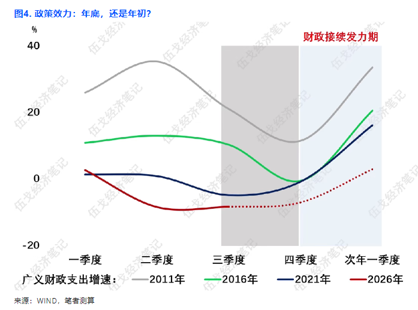
背景与关键数据
- 财政存款：政府在央行（国库）和商业银行的存款，是政府收了但还没花的钱。存款创新高 = 财政支出偏慢，等于从经济里"抽走"流动性。
- 专项债：地方政府发行的、以特定项目收益偿还的债券，用来投基建、保障房等。
- 成本—收益层面的矛盾：地方投资一个项目，要算"项目能挣多少"（项目收益率）和"借钱要付多少利息"（专项债利率）。伍戈的判断是：专项债利率在降，项目收益率降得更快，两者差距缩小甚至倒挂，地方就没有动力投。
- 其他因素：GDP 目标实现难度、地方换届（官员换届期通常投资决策偏谨慎）。
图片解读
图 4，标题"政策效力：年底，还是年初？"，来源 WIND、笔者测算，水印"伍戈经济笔记"。
- 纵轴：广义财政支出增速（%），范围 −20 到 +40；横轴：一季度、二季度、三季度、四季度、次年一季度。
- 四条线：灰色 2011 年、绿色 2016 年、深蓝 2021 年、红色 2026 年（三季度之后为红色点线，是预测）。
- 形状（我读的近似值）：
- 2011：一季度约 +26，二季度升到约 +35，之后下降，四季度约 +12，次年一季度回升到约 +33。
- 2016：全年约 +11 到 +13，四季度跌到约 −1，次年一季度回升到约 +20。
- 2021：一、二季度约 +1，三季度约 −5，四季度约 −1，次年一季度回升到约 +16。
- 2026：一季度约 +2.5，二季度跌到约 −9，三季度约 −8；预测四季度约 −7，次年一季度回升到约 +3。
- 阴影：灰色阴影覆盖三季度到四季度；蓝色阴影从四季度延伸到次年一季度，标注"财政接续发力期"。
- 信号：历史上四季度往往是低点，次年一季度反弹；但 2026 年的预期反弹（约 +3）明显小于过去三次（+16 到 +33）。图的标题问"年底还是年初"，答案是更像年初，而且力度偏弱。
为什么重要 / 对市场和经济的含义
- 如果财政"年底不发力、年初才发力"，那么四季度的经济数据可能偏弱，政策层面的"提振预期"要等到明年一季度。
- 这个判断也与帖 8、9 的 A 股情绪一致：投资者偏防御，等待政策与基本面的信号。
- 提示：这是一位宏观经济学者的判断，图中 2026 年的后半段是预测值，不是实际数据。
延伸知识
- 财政乘数（fiscal multiplier）：政府多花 1 元，最终带来多少元的 GDP。如果财政存款堆着不花，乘数就无从谈起——这是"钱在账上，经济没感觉"的原因。
- 门槛收益率（hurdle rate）：任何投资者（包括地方政府）做项目，都要比较"项目回报"和"融资成本"。当两者接近，就算融资成本在降，也没人愿意投。这也是为什么单靠"降息"有时推不动投资。
帖 8 华泰：投资者调查偏向防御资产
华泰研究对投资者的问卷显示，未来三个月最看好的资产是债券，其次是黄金和美元资产，股市只排第五。读全文收起
发布时间：2026-10-18 13:53（美西）｜北京时间 10-19 04:53 标签：#金融# ｜ 图片 1 张
帖子原文
华泰： 本期调查明显偏向防御资产，看好债券的投资者最多 #金融#
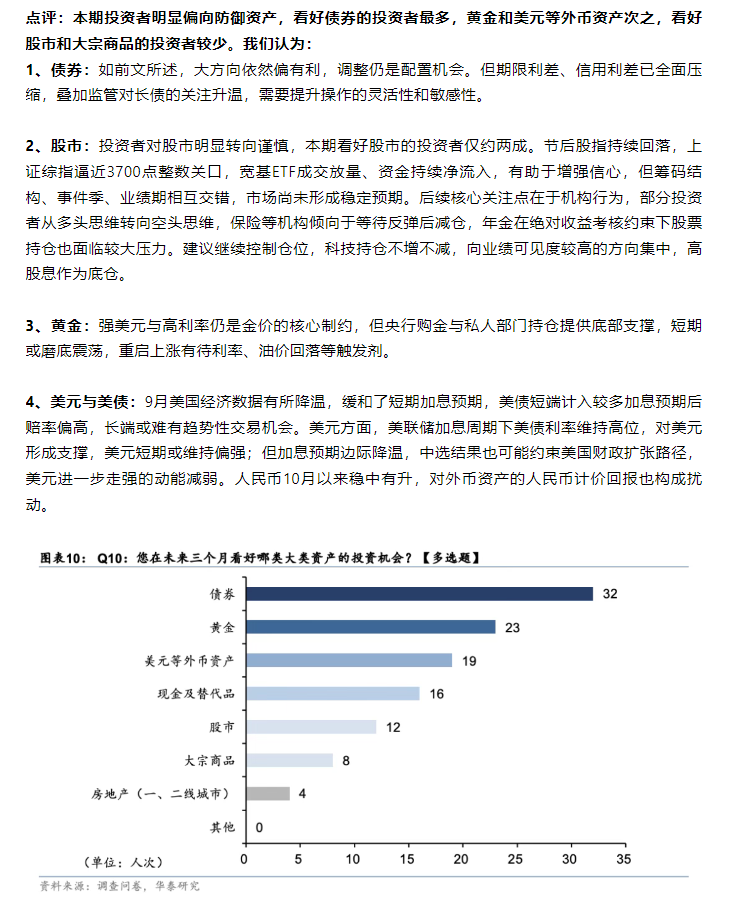
背景与关键数据
- 图中的问卷：Q10"您在未来三个月看好哪类大类资产的投资机会？【多选题】"，单位"人次"，资料来源是调查问卷、华泰研究。
- 数据：债券 32、黄金 23、美元等外币资产 19、现金及替代品 16、股市 12、大宗商品 8、房地产（一二线城市）4、其他 0。
- 文字点评的要点：
- 债券：大方向依然偏有利，调整仍是配置机会；但期限利差、信用利差已全面压缩，加上监管对长债的关注升温，需要提升操作的灵活性。
- 股市：投资者明显转向谨慎，本期看好股市的仅约两成。点评提到上证指数在 3700 点整数关口附近、宽基 ETF 放量、资金持续净流入，但筹码结构、事件季和业绩期相互交错，市场尚未形成稳定预期；建议继续控制仓位，科技持仓不增不减，向业绩可见度较高的方向集中，高股息作为底仓。
- 黄金：强美元与高利率仍是核心制约，但央行购金与私人部门持仓提供底部支撑，短期或磨底震荡。
- 美元与美债：9 月美国经济数据降温，缓和了短期加息预期；美联储加息周期下美债利率维持高位，对美元形成支撑；人民币 10 月以来稳中有升。
图片解读
横向条形图，条越长表示选这项的人越多。深蓝的"债券"最长（32），往下颜色渐浅，"房地产"用灰色（4），"其他"为 0。信号：这是一个"防御"排序——债券、黄金、外币资产、现金排在前四位，股票、商品、房地产排在后面。
为什么重要 / 对市场和经济的含义
- 问卷是情绪指标，反映的是机构和投资者此刻的偏好，不是市场的客观价值。需要注意：多选题的总数加起来没有给出，所以不能直接算"占比"，只能比较排序。
- 情绪调查常被当作反向指标：当大家一边倒地看好防御资产时，意味着悲观情绪已经比较充分，反而是潜在的转折信号（但不是必然）。
- 点评里"期限利差、信用利差已全面压缩"是对债券最直接的提醒：利差薄了，继续买债的"安全垫"就薄了。
延伸知识
- 期限利差与信用利差：期限利差 = 长期利率 − 短期利率；信用利差 = 信用债收益率 − 同期限国债收益率。利差压缩意味着承担更多风险得到的补偿变少。
- 情绪指标的使用方法：美国有 AAII 个人投资者调查、美银全球基金经理调查（FMS，里面有"现金比例"），用法一样：极端值有参考价值，但不能当作择时的唯一依据。
帖 9 德辉看市：近期调查观点（《德辉看市》1016）
一家机构（德辉）总结渠道交流后认为：市场下跌的核心驱动是海外加息预期，加上对 AI 资本开支不可持续的担忧，创业板连跌 4 个月、累计约 −35%，超跌反弹仍可期，大概率修复前期跌幅的一半。读全文收起
发布时间：2026-10-18 13:55（美西）｜北京时间 10-19 04:55 标签：#A股# ｜ 图片 2 张
帖子原文
德辉看市： 近期调查观点 #A股#
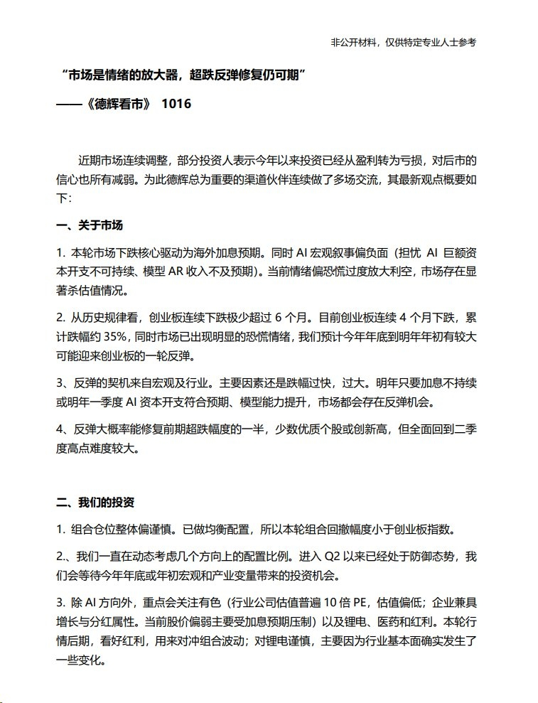
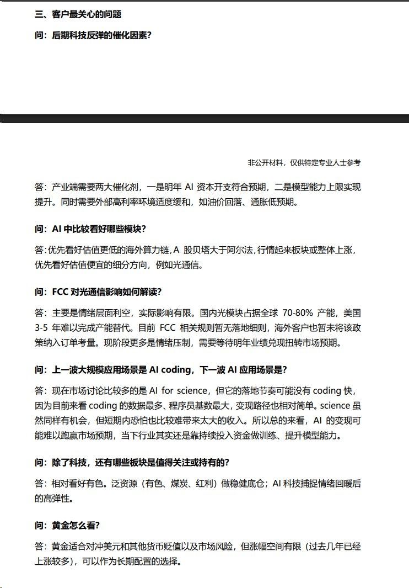
文件页眉标注"非公开材料，仅供特定专业人士参考"，下面只做要点概括，不整段转录。
背景与关键数据
一、关于市场
- 本轮下跌的核心驱动是海外加息预期；同时 AI 宏观叙事偏负面（担忧 AI 巨额资本开支不可持续、模型 ARR 收入不及预期）。情绪偏恐慌，过度放大利空，市场存在显著"杀估值"。
- 历史上创业板连续下跌极少超过 6 个月；现在已连跌 4 个月、累计跌幅约 35%，且已有明显恐慌情绪，预计今年底到明年初有较大可能迎来一轮反弹。
- 反弹契机来自宏观及行业，主因是跌幅过快过大；明年只要加息不持续、或明年一季度 AI 资本开支符合预期、模型能力提升，市场都有反弹机会。
- 反弹大概率修复前期超跌幅度的一半，少数优质个股可能创新高，但全面回到二季度高点难度较大。
二、他们的投资：仓位偏谨慎，已做均衡配置，所以本轮回撤小于创业板指数；Q2 以来处于防御态势，等待年底或明年初的宏观和产业变量带来机会；除 AI 外，重点关注有色（行业估值普遍 10 倍 PE，偏低）、锂电、医药和红利，对锂电较谨慎（行业基本面有变化）。
三、客户最关心的问题（问答摘要）
- 科技反弹的催化剂：产业端需要明年 AI 资本开支符合预期、模型能力上限提升；同时需要外部高利率环境适度缓和（如油价回落、通胀低预期）。
- AI 里看好哪些模块：优先看好估值更低的海外算力链，A 股贝塔大于阿尔法，优先看好估值便宜的细分方向，例如光通信。
- FCC 对光通信的影响：主要是情绪层面利空，实际影响有限。国内光模块占全球 70%–80% 产能，美国 3–5 年难以完成产能替代；目前 FCC 相关规则暂无落地细则，海外客户暂未将该政策纳入订单考量；现阶段更多是情绪压制，需等明年业绩兑现。
- AI 下一波应用场景：讨论较多的是 AI for science，但落地节奏可能没有 coding 快；AI 的变现可能难以跑赢市场预期，行业仍靠持续投入资金做训练、提升模型能力。
- 其他板块：相对看好有色，泛资源（有色、煤炭、红利）做稳健底仓；黄金适合对冲美元和其他货币贬值及市场风险，但涨幅空间有限，可作为长期配置。
图片解读
两张图是 PDF 页面截图，标题"市场是情绪的放大器，超跌反弹修复仍可期"。图 1 是"关于市场"和"我们的投资"，图 2 是"客户最关心的问题"问答。没有图表，信息都是文字。
为什么重要 / 对市场和经济的含义
- 与帖 8 呼应：A 股投资者偏防御、对股市谨慎，这份材料是机构站在"悲观情绪已较充分"的角度，给出的"逆向观点"。
- 与你关注的光通信方向直接相关：国内光模块占全球 70%–80% 产能这一条，是理解"美国 FCC 相关限制为什么实际影响有限"的关键事实（如果你在追踪 AAOI、LITE、COHR 这类美股光通信公司，可以把它作为一条线索）。
- 注意：这是一家机构的观点和渠道交流总结，"大概率修复一半""明年年初反弹"都是推测，不是确定的事。
延伸知识
- 超跌反弹（oversold rebound）：价格跌得太快太深，哪怕基本面没变，也会出现技术性反弹。但"反弹"和"反转"不是一回事：反弹是短期修复，反转需要基本面改善。
- 贝塔与阿尔法：贝塔（β）是跟着整个市场涨跌的部分；阿尔法（α）是超出市场的个股额外收益。文中"A 股贝塔大于阿尔法"意思是：行情起来时，板块整体涨的概率大于个股自己表现突出，所以不用过度纠结选哪一只。
- ARR（年度经常性收入）：软件、AI 模型公司常用的收入指标，把订阅类合约折算成"每年稳定能收多少"。AI 公司的 ARR 是否达标，是市场判断 AI 投资回报的主要依据之一。
帖 10 Westpac：新西兰房价疲弱不只是新西兰的问题
Westpac（新西兰银行）的经济学者认为：新西兰房价疲弱主要是全球性的"资金不再便宜"，而不是新西兰特有的问题；实际房价下降可能反而有利于经济资源转向生产率更高的用途。读全文收起
发布时间：2026-10-18 14:00（美西）｜北京时间 10-19 05:00 标签：#其他国家经济# ｜ 图片 2 张
帖子原文
Westpac： 最近，越来越多的人开始关注新西兰房地产市场的疲弱表现，以及这种表现对经济和政治形势意味着什么。在我看来，我们不应该把新西兰房地产市场的疲弱过多归因于新西兰特有的因素。从图表可以看到，几乎所有国家的实际房价都表现得非常疲弱，即使是人均经济增长表现强劲的美国也不例外。现实是，资金已经不像以前那样便宜了。房地产市场必须适应这种变化。实际房价下降，对经济而言或许是一件好事。实际房价下降为经济资源重新配置创造了条件，当资本、劳动和信贷真正转向生产率更高的用途时，这种调整会转化为长期经济收益。 #其他国家经济#
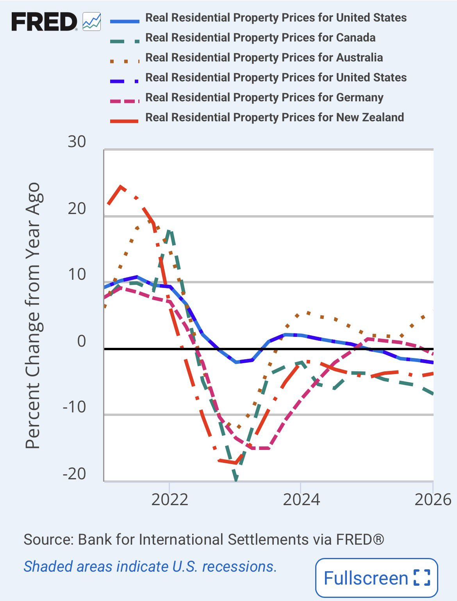
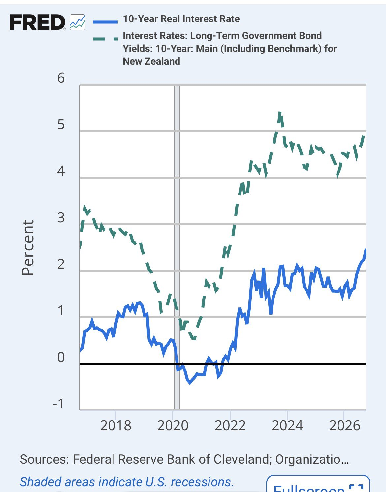
背景与关键数据
- 实际房价：扣除通胀后的房价。名义房价没变、通胀 3%，实际房价就跌了 3%。
- 作者的论点：①不是新西兰独有，各国实际房价都疲弱；②核心原因是资金成本回升（利率高了）；③房地产必须适应；④实际房价下降有"资源重新配置"的好处。
- 与帖 4 的联系：帖 4 讲新西兰的利率和汇率，本帖讲同一个利率环境对房地产的影响。
图片解读
图 1：FRED（美联储圣路易斯分行的数据库），数据来自国际清算银行（BIS）
- 标题：Real Residential Property Prices（实际住宅价格），纵轴为同比变化 %，范围 −20 到 +30，横轴 2021–2026；黑色粗线是 0%。图例中美国出现了两次（一条实线浅蓝、一条蓝色虚点线），应是图例重复，其余为加拿大（绿虚线）、澳大利亚（棕点线）、德国（洋红虚线）、新西兰（红点划线）。
- 形状：2021 年所有国家实际房价同比上涨（新西兰最高约 +24%，澳大利亚约 +19%，加拿大约 +17%，美国、德国约 +8% 到 +10%）；2022–2023 年急转直下，新西兰约 −18%、加拿大约 −20% 以上、德国约 −16%、澳大利亚约 −12%，美国最浅约 −3%。
- 到 2026 年：加拿大约 −7%、新西兰约 −4.5%、美国约 −3%、德国约 −1.5%；澳大利亚是个例外，回升到约 +5%。这点和帖子的"几乎所有国家"措辞大致吻合，但并非完全无例外。
- 信号：加息周期里所有国家房价都经历了一轮实际下跌，之后弱势持续；新西兰与加拿大在 2026 年仍在负值区间。
图 2：10 年期实际利率 vs 新西兰 10 年期国债收益率
- 蓝实线是"10-Year Real Interest Rate"（来源写克利夫兰联储，口径上应是美国的 10 年期实际利率），绿虚线是新西兰 10 年期国债收益率；纵轴 %，横轴 2017–2026。
- 实际利率：2017 年约 0.2–1%，2020–2021 年疫情期转为负值（约 −0.5%），2022 年起快速上升，2023 年后在约 1.5%–2% 之间波动，2026 年末升到约 2.4%。
- 新西兰 10 年期国债收益率：2017 年约 3.3%，2020 年降到约 0.5%，2023 年底升到约 5.3%，2024–2026 在约 4%–4.7% 之间，最末升到约 4.9%。
- 信号：长期利率已远高于疫情前水平，且近期仍在上行。
为什么重要 / 对市场和经济的含义
- 资产价格的底层逻辑之一是"资金成本"。2020–2021 年实际利率为负，借钱几乎不要成本，房价大涨；现在实际利率约 +2%，那一轮的估值基础就变了。
- 作者说"实际房价下降是好事"是一种长期视角：资金不再沉淀在房地产里，转向生产率更高的行业。但短期代价是居民财富缩水、消费疲弱、银行资产质量受压，这是他没有展开的一面。
延伸知识
- 名义 vs 实际：名义房价是标价，实际房价扣除了物价。通胀高的年份，哪怕名义房价没跌，实际房价也在跌——这就是"悄悄下跌"。
- 资本化率（cap rate）与利率：房子的合理价格≈ 租金收益 ÷（利率 − 租金增长率）。分母里的利率上升，价格就下降。类比：同样每月能收 1000 元租金的房子，利率 2% 时值很多钱，利率 5% 时只值一半不到。
- 资源再配置（creative destruction，熊彼特"创造性破坏"）：旧的、低效率的用途退出，资源流向新的、高效率的用途，是长期增长的来源，但过程往往痛苦。
帖 11 Robin Brooks：中国 9 月对俄罗斯出口大幅上升
中国对俄罗斯的月度出口在 2026 年 9 月冲到约 134 亿美元，是图中有数据以来的最高点；西方主要国家对俄出口在 2022 年 3 月后基本崩塌。读全文收起
发布时间：2026-10-18 14:02（美西）｜北京时间 10-19 05:02 标签：#经济数据# ｜ 图片 1 张
帖子原文
robin brooks： 中国9月对俄罗斯的出口大幅上升 #经济数据#
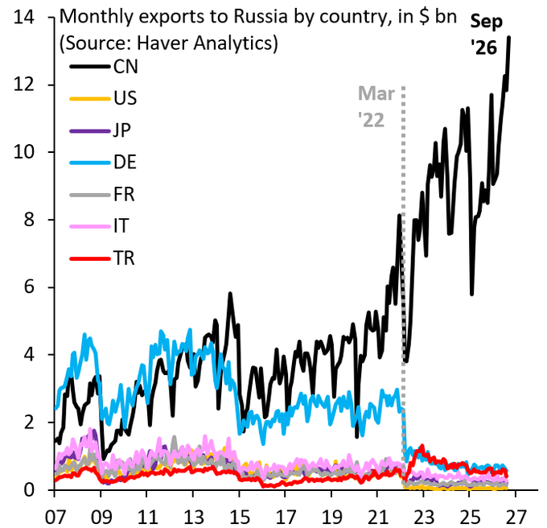
背景与关键数据
- 图表来源：Haver Analytics（宏观经济数据库），作者 Robin Brooks 是前国际金融协会（IIF）首席经济学家，常用图表分析制裁和汇率。
- 2022 年 3 月（图中虚线 "Mar '22"）是俄乌战争爆发后西方实施大规模制裁的时间点。
图片解读
- 标题：Monthly exports to Russia by country, in $ bn；纵轴：月度出口（十亿美元），0–14；横轴：2007–2027（以年份标记）。
- 图例：CN 中国（黑）、US 美国（黄）、JP 日本（紫）、DE 德国（浅蓝）、FR 法国（灰）、IT 意大利（粉）、TR 土耳其（红）。
- 形状：
- 德国（浅蓝）2008 年一度高到约 $4.5B，2014–2022 年约 $2–3B，2022 年 3 月后骤降到约 $0.5B。
- 中国（黑）2007–2021 年大致在 $2B–$5B 之间；2022 年后跃升到 $8B 左右，2024–2025 年约 $9B–$11B；2026 年 9 月接近 $13.4B，是整张图最高点，近几个月上升很陡。
- 美、日、法、意：全程约 $1B 以下，2022 年后更低；土耳其（红）2022 年后短暂升到约 $1.3B，之后在约 $0.5B 附近。
为什么重要 / 对市场和经济的含义
- 这张图显示：西方对俄出口消失的那一块，几乎由中国补上了。俄罗斯能继续从外部买到机械、汽车、电子产品等，是它战争经济能维持的因素之一。
- 对中国来说，对俄出口是一个越来越大的出口市场，但也带来"次级制裁"风险（美国或欧盟制裁与俄交易的第三国企业）。
- 与帖 3 联系：帖 3 讲乌克兰在能源、武器上承压，本帖是同一场战争的"另一端"——俄罗斯的外部供给。
- 提示：帖子只给了一个数据点（9 月大幅上升），背后原因（价格、品类、结算方式、季节性）图中无法判断。
延伸知识
- 制裁规避（sanctions circumvention）与第三国转口：制裁封堵了直接渠道，货物会改走第三国。图中土耳其 2022 年后短暂上升，就有这类特征。
- 月度数据的噪音：这条黑线上下抖动很大（例如 2025 年初前后有一次从约 $11B 掉到约 $6B），所以看"9 月创新高"要结合趋势，而不是只看一个点。
帖 12 Apollo：估值越高，未来十年回报越低
历史数据显示，买入时标普 500 的远期市盈率越高，随后十年的年化回报越低；以现在的估值推算，未来十年年化回报大约只有 4–5%。读全文收起
发布时间：2026-10-18 14:12（美西）｜北京时间 10-19 05:12 标签：#金融# ｜ 图片 1 张
帖子原文
Apollo： 标普500远期市盈率与随后10年期年化回报率的历史关系表明，投资者应预期未来十年标普500的复合年增长率将达到4%。买入时的估值越高，未来10年的年化回报率往往越低。从基本面看，股票长期收益主要取决于三个因素：长期回报=股息收益+盈利增长+估值变化贡献，高估值会压低长期回报，举个例子。假设标普500未来10年企业盈利增长一倍，但市盈率从24倍下降到16倍。那么指数价格变化约为：16/24=1.333，也就是说，企业盈利增长100%，指数价格却只上涨33.3%。对应10年价格年化收益约2.92%，尚未计入股息。原因是盈利增长创造的部分价值，被估值倍数下降抵消了。反过来，如果你在12倍PE买入，未来盈利增长一倍，同时PE回升至18倍：18/12=3，指数价格上涨200%，年化约11.61%，同样未计入股息。因此，长期投资者不仅需要判断企业未来能赚多少钱，还需要判断今天为了这些盈利付出了多高的价格。 #金融#
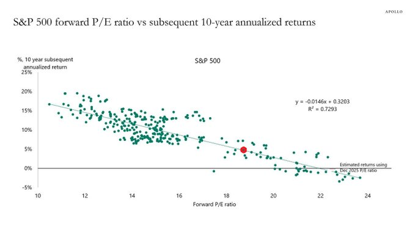
背景与关键数据
- 远期市盈率（forward P/E）：股价 ÷ 未来 12 个月预期每股盈利。比如 20 倍，意思是"愿意为每 1 元预期利润付 20 元"。
- 长期回报的分解：回报 = 股息率 + 盈利增长 + 估值变化。估值倍数涨，回报被放大；估值倍数跌，回报被吃掉。
- 帖子里的两个算例，我验算了一遍：
- 例 1：盈利 ×2、市盈率 24→16（×16/24 ≈ 0.667），价格变化 = 2 × 0.667 = 1.333，即 +33.3%；十年年化 = 1.333^(1/10) − 1 ≈ 2.92% ✓
- 例 2：盈利 ×2、市盈率 12→18（×1.5），价格变化 = 2 × 1.5 = 3，即 +200%；十年年化 = 3^(1/10) − 1 ≈ 11.61% ✓
- 注意：帖子里写的"16/24=1.333""18/12=3"是省略了"盈利翻倍"这个×2的简写，直接按字面算 16/24 = 0.667、18/12 = 1.5，需要再乘 2 才对。结论和数字都是对的，只是写法容易误导。
图片解读
- 标题：S&P 500 forward P/E ratio vs subsequent 10-year annualized returns（Apollo）。
- 横轴：远期市盈率 10–24 倍；纵轴：随后十年年化回报，−5% 到 +25%。每个绿点是一个历史时点。
- 回归线：y = −0.0146x + 0.3203，R² = 0.7293。意思是：远期市盈率每高 1 倍，随后十年年化回报平均低约 1.5 个百分点；这个关系能解释约 73% 的回报差异。线与 0% 交点在市盈率约 22 倍——在这个估值买入，历史上十年平均回报接近 0。
- 形状：左上（市盈率 11–14 倍）绿点集中在年化 10%–20%；右下（市盈率 20–24 倍）绿点在 0% 附近甚至为负。
- 红点：标注"用 2025 年 12 月的市盈率估算"，位置在市盈率约 18.7 倍、年化回报约 4.5%–5%（帖子取整写成 4%）。
为什么重要 / 对市场和经济的含义
- 提醒：估值是预测长期回报的少数几个有效指标之一，但对未来一两年几乎没有预测力。高估值的市场可以继续涨很久。
- 对长期投资者的含义：不能只看"企业赚多少"，还要看"今天买贵了没有"。
- 注意：R² = 0.73 看起来很高，但这里的十年窗口大幅重叠（相邻月份的十年回报几乎是同一段行情），实际独立样本远少于图上的点，因此统计上的把握没有看上去那么大。另外，利润率结构、利率水平变化也可能让历史规律失效。
延伸知识
- 均值回归（mean reversion）：估值像橡皮筋，拉得太高，长期看倾向回到均值。诺贝尔奖得主席勒（Shiller）的周期调整市盈率（CAPE）就是这类思路。
- 三因素分解：长期回报 = 股息 + 盈利增长 + 估值变化。盈利增长是"实打实创造的价值"，估值变化是"别人愿意出的价格"，前者长期占主导，但估值变化在十年内也足够改变结局，帖子的两个算例就是这个道理。
帖 13 BirthGauge：香港为什么需要人口流入
香港 65 岁及以上人口占比将从 2021 年的 20% 升到 2046 年的 36%，叠加全球最低的生育率，必须靠外来人口补充劳动力。读全文收起
发布时间：2026-10-18 14:15（美西）｜北京时间 10-19 05:15 标签：#人口# ｜ 图片 1 张
帖子原文
BirthGauge： 香港需要人口流入，因为全球最低的生育率，也因为已经在路上的超高老龄化。 #人口#
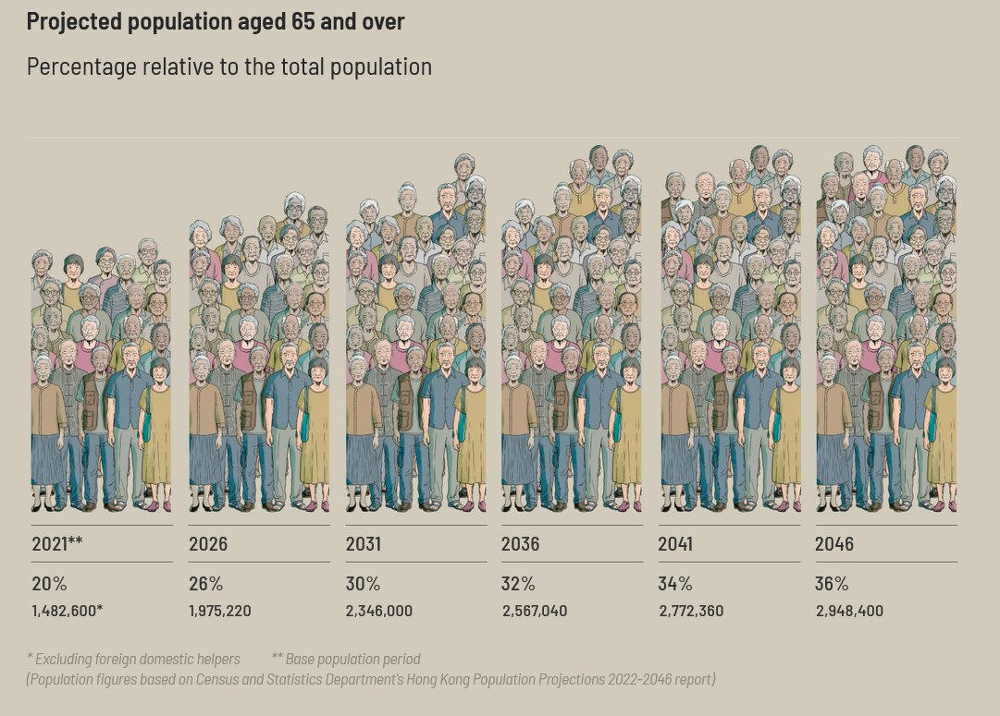
背景与关键数据
- 生育率：总和生育率（TFR）指一位女性一生平均生几个孩子，2.1 左右才能维持人口不变。香港这个数字已降到 1 以下，处于全球最低梯队（帖子的表述为"全球最低"）。
- 老龄化的"已经在路上"：今天的 40–50 岁的人，二三十年后就是老年人，未来老年人口数量已经由现有人口决定，无法靠政策快速改变。
图片解读
标题 Projected population aged 65 and over（65 岁及以上人口预测），副标题"占总人口的百分比"，来源：香港政府统计处《香港人口推算 2022–2046》。六组人物图，每组高度随比例升高：
| 年份 | 65+ 占比 | 65+ 人数 |
|---|---|---|
| 2021（基期） | 20% | 约 148.3 万 |
| 2026 | 26% | 约 197.5 万 |
| 2031 | 30% | 约 234.6 万 |
| 2036 | 32% | 约 256.7 万 |
| 2041 | 34% | 约 277.2 万 |
| 2046 | 36% | 约 294.8 万 |
- 脚注：*不含外籍家庭佣工，**为基期人口。
- 信号：2021→2026 的五年间占比跳了 6 个百分点，是最快的一段；之后增速放缓，但仍持续上升，到 2046 年约每 3 个人里有 1 个以上是长者，数量几乎翻倍。
为什么重要 / 对市场和经济的含义
- 劳动力与财政：老年人口占比升高，意味着纳税和缴费人口相对减少，医疗、养老开支上升。这与帖 6 里"社保依赖未来缴费人群"的逻辑直接相连。
- 政策反应：香港这几年推出各类吸引人才和人口的计划（如"高端人才通行证"等），背景就是人口缺口。
- 这也是大多数发达经济体、以及中国正在面对的同一个趋势。
延伸知识
- 抚养比（dependency ratio）：（老年人口 + 儿童人口）÷ 劳动年龄人口。比值越高，每个工作的人要"养"更多人。
- 人口红利的反面：人口红利指劳动年龄人口占比高、抚养负担轻的阶段；老龄化意味着这个窗口在关闭。移民是少数能"快速"调整人口结构的手段，但有社会融合和政治接受度的约束。
帖 14 IIF：全球债务达到 366 万亿美元
截至 2026 年二季度，全球债务达 $366 万亿，创历史新高；疫情后债务占 GDP 比例的平均水平比疫情前高出约 10 个百分点。读全文收起
发布时间：2026-10-18 14:18（美西）｜北京时间 10-19 05:18 标签：#金融# ｜ 图片 1 张
帖子原文
IIF： 截至Q2，全球债务规模创下366万亿美元的新纪录，covid改变了很多。 #金融#
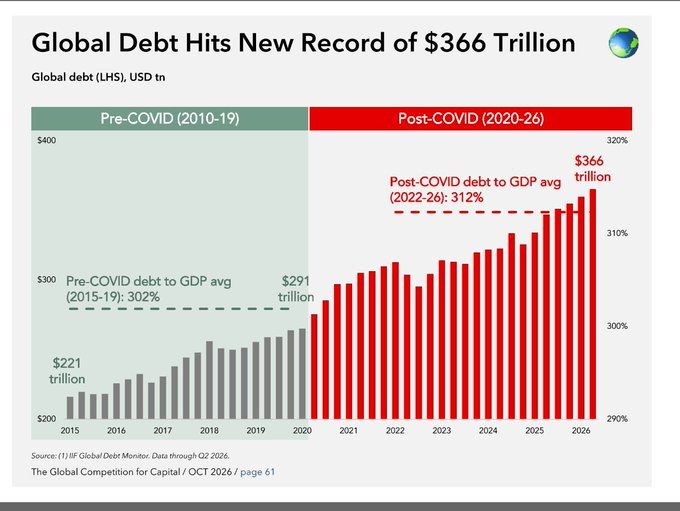
背景与关键数据
- IIF（国际金融协会） 的 Global Debt Monitor 统计包括政府、企业、金融机构和家庭的债务。
- 计算：2015 年 $221 万亿 → 2020 年 $291 万亿 → 2026 年二季度 $366 万亿。2015 到现在增长约 66%；2020 年（疫情开始）到现在增长约 26%，也就是多了约 $75 万亿。
- 图的出处写着 "The Global Competition for Capital / OCT 2026 / page 61"（一份 2026 年 10 月的报告第 61 页）。
图片解读
- 标题：Global Debt Hits New Record of $366 Trillion；左纵轴：全球债务（万亿美元，$200–$400）；右纵轴：债务占 GDP（290%–320%）；横轴：2015–2026。
- 柱子：灰色（2015–2019，疫情前）逐年缓升，2015 年约 $221 万亿；2020 年约 $291 万亿；红色（2020–2026，疫情后）继续攀升到 2026 年的 $366 万亿。
- 虚线：两条虚线对应右轴的债务/GDP 平均水平。疫情前（2015–19）平均 302%；疫情后（2022–26）平均 312%。
- 信号：债务的绝对值一直在升；债务相对 GDP 的比例，疫情后整体抬高了约 10 个百分点，并且没有回落。
为什么重要 / 对市场和经济的含义
- 债务高意味着利息负担重；在利率较高的环境（见帖 10 的利率图）里，每年的利息支出会挤占投资和公共开支。
- 与今天多个帖子相连：帖 5 的法国（财政难以满足公共服务）、帖 15 的中国（债务/GDP 约 305%）、帖 6 和帖 7 的中国财政与社保，都是这张图的具体个案。
- 提示：全球债务总量大，不等于马上出问题。关键看谁借的、借多久、利率多少、有没有资产对应。
延伸知识
- 债务/GDP（杠杆率）：用债务总量除以一年的经济产出，衡量"负债相对于收入的大小"。比绝对值更有可比性，因为经济本身也在变大。
- 债务的动态稳定性：只要经济的名义增速高于债务的利息率，债务/GDP 可以不升；一旦利率高于增速，滚动债务就越滚越重。这是为什么利率上升时，高债务国家会同时承压（下一帖就是中国的具体算法）。
帖 15 瑞银：中国不是借得太少，而是"每一块钱债务撬动的增长太少"
瑞银的判断：中国债务增速虽已降到 7% 以下，但债务基数已经约占 GDP 的 300% 以上，每新增 1 元债务只能换来约 0.2 元的 GDP 增量，而要稳住债务/GDP 需要 0.33 元——问题不在借得少，而在借来的钱不再有效率。读全文收起
发布时间：2026-10-18 17:33（美西）｜北京时间 10-19 08:33 标签：#金融# ｜ 图片 1 张
帖子原文
瑞银： 虽然中国名义债务增速已大幅放缓至7%以下，但由于债务基数庞大（约占GDP的300%-305%），绝对的债务积累量并未减少，甚至高于全球金融危机前的平均水平。更严峻的是，债务的使用效率显著降低，目前需5元债务才能撬动1元GDP，且大量新增债务被用于支付利息而非生产性投资。数学逻辑显示，在当前高债务存量下，要稳定债务比率，每新增1元债务需带来0.33元的名义GDP增长，这一要求几乎是近期实际表现的两倍。因此，中国并非借贷不足，而是面临着在高债务存量下增长动力转换的挑战，单纯增加借贷难以实现更高的名义增长和更低的债务比率均衡。 #金融#
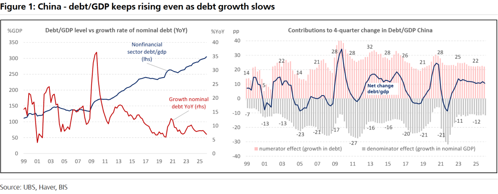
背景与关键数据
- 债务/GDP 约 300%–305%：中国非金融部门（政府 + 企业 + 居民）的债务总额，大约是一年 GDP 的 3 倍。
- "5 元债务撬动 1 元 GDP"：即边际债务效率（新增债务 ÷ 新增 GDP）约 5。
- "稳定债务比率需要 0.33"：设债务/GDP 为 D/Y ≈ 3.05。要让这个比率不再上升，每多借 1 元债务（ΔD），名义 GDP 要多增加 ΔY = ΔD ÷ (D/Y) = 1 ÷ 3.05 ≈ 0.33 元。目前每 5 元债务才换 1 元 GDP（即每 1 元债务只带来约 0.2 元），所以要求几乎是实际的 1.7–2 倍。
- 我用图上的数字验算了一遍：图右侧，债务增长的"分子效应"约 +22 个百分点，名义 GDP 增长的"分母效应"约 −12 个百分点，净变化约 +10 个百分点。用 D/Y≈3.05 反推：债务增速 ≈ 22 ÷ 305 ≈ 7.2%，名义 GDP 增速 ≈ 12 ÷ 305 ≈ 3.9%；两者之比 × 3.05 ≈ 5.6，与"约 5 元"一致。这说明**名义 GDP 增速太低（约 4%）**是关键，而不是债务增速太高。
图片解读
UBS 图 1，标题 "China – debt/GDP keeps rising even as debt growth slows"（中国——即使债务增速放缓，债务/GDP 仍在上升），来源 UBS、Haver、BIS。
左图：债务/GDP 水平（深蓝，左轴 %GDP）vs 名义债务同比增速（红，右轴 %YoY），横轴 1999–2026。
- 深蓝线：1999 年约 110% → 2009 年后升到约 170% → 2016 年约 240% → 2026 年约 305%，几乎一直在上升。
- 红线：名义债务增速在 2009 年全球危机后冲到约 40%，之后一路下降，2026 年约 6%–7%，是图中最低的区间之一。
- 信号：红线下降、蓝线上升，同时出现——增速放缓，但存量大到水平仍在爬升。
右图：债务/GDP 的 4 季度变化拆分，纵轴为百分点（pp），横轴 1999–2026。
- 粉色柱子 = "分子效应"（债务增长推高比率）；灰色柱子 = "分母效应"（名义 GDP 增长拉低比率）；深蓝线 = 净变化。
- 近几年：分子约 +22、分母约 −12、净变化约 +10 个百分点。2009 前后和 2020 前后两次，分子效应与净变化都明显冲高，分别对应全球金融危机后的刺激和疫情时期。
- 信号：就算每年借的比例（分子）比过去低，因为分母（名义 GDP 增长）也弱，净变化仍是正的，比率还是上升。
为什么重要 / 对市场和经济的含义
- 这是对"再加杠杆能不能救增长"的反面回答：在债务高、增长慢的位置，加大借贷的边际效果越来越小，政策空间受限。
- 与帖 6、7 一起看：财政存款创新高但地方不投（帖 7）、社保强缴引发担忧（帖 6），可以理解为同一个难题——在高债务和弱现金流的现实下，各方都在"保自己的账"。
- 对资产价格的含义：名义增长低，企业利润、财政收入和居民收入的增长都受限，通常与低利率、债券相对受青睐（帖 8 的问卷）一致。
- 注意：这是瑞银的分析框架，对"0.33"的算法依赖于债务/GDP 的统计口径（这里是 BIS/Haver 的非金融部门口径），换口径数字会变。
延伸知识
- 边际资本产出率与"债务效率"：新增 1 元投资（或债务）带来多少新增产出。当一个经济体已经有很多基础设施，再投下去的回报往往递减，所以越后期"每 1 元债务换到的 GDP 越少"。
- 债务通缩（debt deflation，费雪）：如果物价和名义 GDP 增速偏低，债务的实际负担就会变重，借钱的人要用更多的实际资源还债，进一步压低支出，形成负循环。这是为什么"名义 GDP 增速"在债务问题中比"债务增速"更关键。
今日全图索引
| 帖号 | 时间（美西） | 主题 | 标签 | 图片文件名 |
|---|---|---|---|---|
| 1 | 10-18 01:42 | 8年前的"马前炮"（长文，配图 11 张未取回） | — | （无） |
| 2 | 10-18 12:33 | 查到仙，草草收场（《雍正王朝》截图） | #扯淡# | post2_img1.png … post2_img9.png |
| 3 | 10-18 12:48 | 泽连斯基指控美方（炼油厂/星链/爱国者） | #其他国家经济# | post3_img1.png, post3_img2.png, post3_img3.png |
| 4 | 10-18 12:53 | Bloomberg：纽币连跌、加息预期落差 | #其他国家经济# | post4_img1.png |
| 5 | 10-18 12:59 | ZeroHedge：法国骚乱与"谁承担调整成本" | #其他国家经济# | post5_img1.png, post5_img2.png |
| 6 | 10-18 13:44 | 西京：社保负拉弗效应 | #TAX# | post6_img1.png, post6_img2.png |
| 7 | 10-18 13:48 | 伍戈：财政存款创新高、财政发力在年初 | #TAX# | post7_img1.png |
| 8 | 10-18 13:53 | 华泰：投资者调查偏向防御资产 | #金融# | post8_img1.png |
| 9 | 10-18 13:55 | 德辉看市 1016：超跌反弹观点 | #A股# | post9_img1.jpg, post9_img2.jpg |
| 10 | 10-18 14:00 | Westpac：新西兰房价疲弱是全球现象 | #其他国家经济# | post10_img1.png, post10_img2.png |
| 11 | 10-18 14:02 | Robin Brooks：中国 9 月对俄出口大增 | #经济数据# | post11_img1.png |
| 12 | 10-18 14:12 | Apollo：标普 500 估值与十年回报 | #金融# | post12_img1.png |
| 13 | 10-18 14:15 | BirthGauge：香港老龄化 | #人口# | post13_img1.png |
| 14 | 10-18 14:18 | IIF：全球债务 $366 万亿 | #金融# | post14_img1.png |
| 15 | 10-18 17:33 | 瑞银：中国债务效率与债务/GDP | #金融# | post15_img1.png |